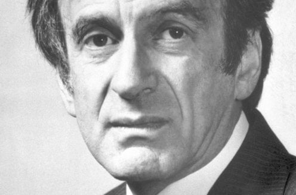
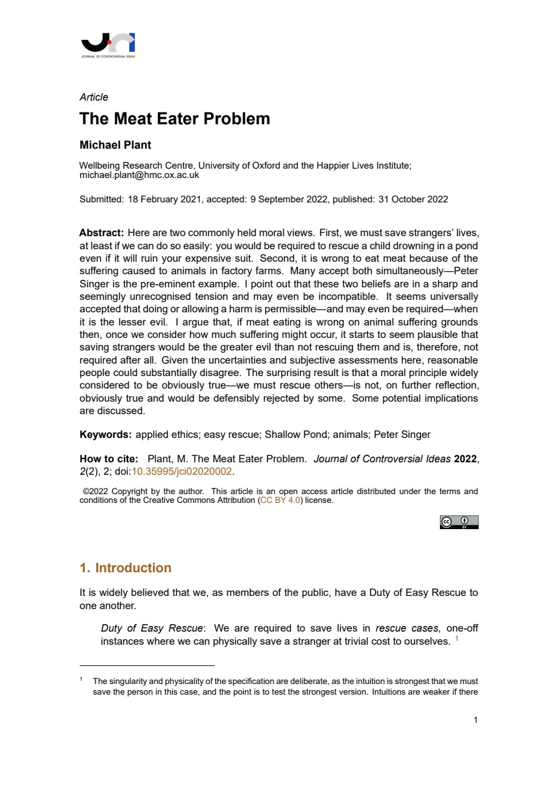
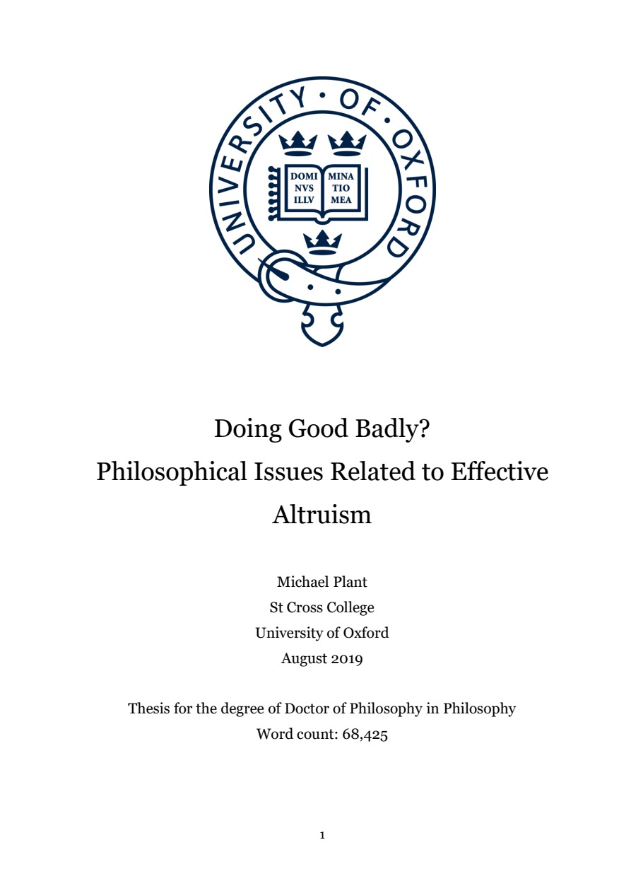

42:12 · 11 OPERE
Possiamo ancora parlare di etica?
Il filo del discorso
Che cosa resta dell’etica quando il prestigio delle istituzioni prende il posto del giudizio sulle azioni? Il relatore parte da Wiesel e da una definizione del retto agire per contestare un argomento di Michael Plant sul soccorso a chi consuma carne. Alla sua interpretazione di un calcolo delle conseguenze oppone la reverenza per la vita di Schweitzer, estesa agli animali senza cancellare il dovere verso gli esseri umani. Il discorso attraversa poi università, industria culturale, pena di morte e dichiarazioni sulla diversità: esempi che egli riunisce sotto il rischio di un conformismo presentato come virtù. Orwell, Huxley, Skinner e Fromm conducono infine alla distinzione fra consenso, controllo delle idee e validità di un giudizio. La scheda conserva la posizione critica del relatore distinguendola dai testi verificati: l’articolo di Plant è un argomento condizionale controverso, la massima scolastica attribuita a Lewis è segnalata come falsa attribuzione dalla fonte ufficiale e le accuse individuali non diventano fatti accertati.
I libri nel discorso

Hope, despair and memory (lezione Nobel 1986)
Identificazione probabile
Ritratto di Elie Wiesel a corredo del discorso: Lezione Nobel per la pace, Oslo, 11 dicembre 1986. Fotografia d’archivio di Wiesel dalla pagina ufficiale Nobel, distinta dalla copertina di un volume.
Fotografia autentica in bianco e nero di Elie Wiesel, fornita nella pagina ufficiale della lezione Nobel. Non è una copertina né un fotogramma certificato della lezione del 1986. La lezione dell’11 dicembre è distinta dal discorso di accettazione del 10 dicembre.
Wiesel è nominato e la frase sul protestare contro l’ingiustizia è riconoscibile nella lezione Nobel dell’11 dicembre 1986; titolo del discorso non pronunciato.
Passaggio 0:13 ↗ · Fonti e libro ↗
Etica Nicomachea
Copertina: Bompiani, Testi a fronte, settembre 2000, 512 pagine, a cura di Claudio Mazzarelli, testo greco a fronte.
Immagine autentica dell’opera, controllata visivamente; l’edizione di riferimento non è attribuita al filmato.
Aristotele ed Etica Nicomachea sono espliciti nella fonte, con deformazione fonetica del titolo nella trascrizione automatica.
Passaggio 1:51 ↗ · Fonti e libro ↗
The Meat Eater Problem
Identificazione probabile
Prima pagina dell’articolo: Journal of Controversial Ideas 2(2), articolo 2, pubblicato il 31 ottobre 2022, DOI 10.35995/jci02020002, PDF di 21 pagine.
Prima pagina intera del PDF originale della rivista: autore, titolo, date, abstract e DOI. Non è una copertina libraria o la pagina del giornale citato nel video.
Michael Plant e l’argomento soccorso/consumo di carne: corrispondenza probabile con l’articolo accademico del 2022; il video legge un diverso titolo giornalistico.
Passaggio 4:54 ↗ · Fonti e libro ↗
Encomio di Elena
Copertina: La Vita Felice, Piccola Biblioteca della Felicità 29, 2021, a cura di Riccardo Pezzano, testo greco a fronte, 64 pagine.
Immagine autentica dell’opera, controllata visivamente; l’edizione di riferimento non è attribuita al filmato.
Gorgia di Leontini, Elena e il suo elogio sono espliciti; distinta l’opera dal Gorgia di Platone.
Passaggio 11:42 ↗ · Fonti e libro ↗
Doing Good Badly? Philosophical Issues Related to Effective Altruism
Identificazione probabile
Frontespizio della tesi: University of Oxford, St Cross College, DPhil in Philosophy, agosto 2019, 268 pagine nel PDF; frontespizio originale, non copertina commerciale.
Prima pagina intera della tesi originale dell’autore. Titolo, nome, college, università, data e qualifica DPhil leggibili.
Tesi di dottorato di Michael Plant esplicita, titolo non pronunciato; identificazione probabile con il PDF dell’autore del 2019.
Passaggio 15:49 ↗ · Fonti e libro ↗
Civilization and Ethics (Kultur und Ethik)
Identificazione probabile
Copertina della raccolta: Prometheus · The Philosophy of Civilization · 1987 · raccolta in inglese
Copertina della raccolta Prometheus del 1987 che contiene The Decay and Restoration of Civilization e Civilization and Ethics. I due saggi, originariamente distinti, restano voci separate. L’edizione in inglese dell’immagine non è attribuita al video.
Reverenza per la vita di Schweitzer e definizione finale dell’etica; rinvio tematico probabile a Kultur und Ethik, senza titolo pronunciato.
Passaggio 23:58 ↗ · Fonti e libro ↗Spaccio de la bestia trionfante
Copertina: BUR Classici, catalogo cartaceo datato 12 settembre 1985, introduzione e commento di Michele Ciliberto, ISBN 9788817165259. Opera originale 1584.
Immagine autentica dell’opera, controllata visivamente; l’edizione di riferimento non è attribuita al filmato.
Giordano Bruno e Spaccio de la bestia trionfante espliciti, con immediata autocorrezione di bestione nella trascrizione automatica.
Passaggio 34:36 ↗ · Fonti e libro ↗
1984
Copertina: Newton Compton · edizione illustrativa
1984 di George Orwell esplicito; a 2180 secondi lettura del passo di parte I, capitolo 7.
Passaggio 35:49 ↗ · Fonti e libro ↗
Il mondo nuovo
Copertina della raccolta: Mondadori · Oscar Moderni · 2016
L’immagine mostra il volume Mondadori che riunisce Il mondo nuovo e Ritorno al mondo nuovo. Il collegamento nel video riguarda il primo romanzo, per allusione al titolo inglese; non identifica un’edizione usata dal relatore.
Brave New World di Aldous Huxley esplicito, con nome deformato dalla trascrizione automatica.
Passaggio 35:49 ↗ · Fonti e libro ↗Beyond Freedom and Dignity (Oltre la libertà e la dignità)
Copertina: Hackett Publishing, ristampa 2002, 240 pagine nel catalogo dell’editore, cartaceo ISBN 9780872206274; originale Knopf 1971.
Copertina fornita dall’editore, con titolo e nome di B. F. Skinner. La ristampa illustrata non è identificata come l’edizione utilizzata nel video.
Skinner e Beyond Freedom and Dignity espliciti; segue la traduzione Oltre la libertà e la dignità.
Passaggio 36:48 ↗ · Fonti e libro ↗
Psicanalisi della società contemporanea (The Sane Society)
Identificazione probabile
Copertina: Copertina inglese The Sane Society, Routledge Classics, 2002, seconda edizione, 424 pagine nel catalogo editoriale, ISBN 9780415270984. Originale Rinehart 1955; prima edizione italiana Edizioni di Comunità 1960. Il 1964 pronunciato nel video può indicare una successiva edizione italiana.
Copertina autentica Routledge, tessitura verde e banda rossa con Fromm e titolo inglese. L’indice identifica il tema in Can a Society be Sick? The Pathology of Normalcy. La copertina inglese del 2002 non è attribuita all’edizione italiana del 1964.
Fromm e il passo sulla convalida consensuale, riscontrato in The Sane Society, capitolo 2, pagine 14–15; titolo del libro non pronunciato.
Passaggio 39:14 ↗ · Fonti e libro ↗